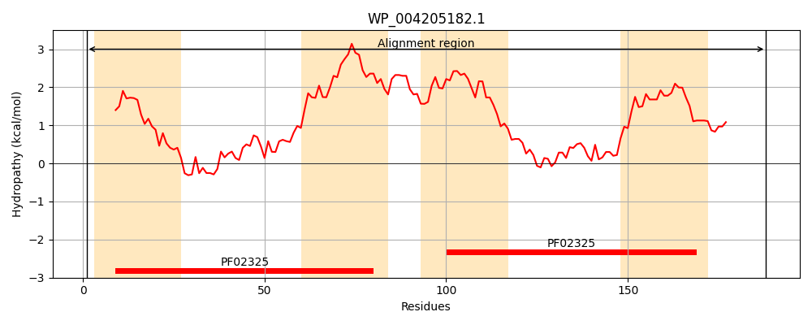
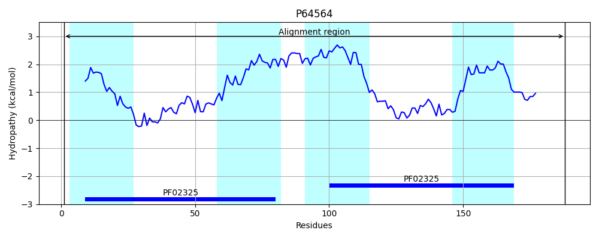
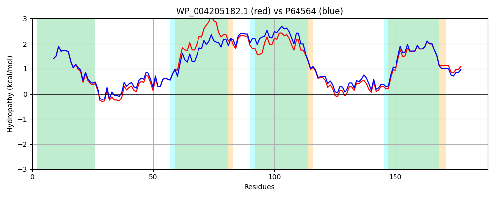

Hit Accession: P64564
Hit TCID: 9.A.4.1.2
Hit Description: gnl|BL_ORD_ID|11206 gnl|TC-DB|P64564|9.A.4.1.2 Hypothetical protein yggT - Escherichia coli.
Mach Len: 188
e:0.000000
Query TMS Count : 4
Hit TMS Count: 4
TMS-Overlap Score: 4.650000
Predicted Substrates:None
BLAST Alignment:
Score: 859 , Bit scores: 335 bits, E-value: 2.0e-119, Alignment length: 188, Percentage identity: 88
Query: 1 MKTLTFLLSTVIELYTMVVLLRVWMQWARCDFYNPFSQFVVKATQPIVGPLRRIIPAMGPIDSASLLVAFILCVIKAIVLFMVITFQPIIWISALLILLKTIGSLIFWVLLLMAIMSWVSQGRSPVEYVLMQLADPLLRPIRNLLPSMGGIDFSPMVLVLLLYVINMGVAEVLQATGNVLLPGLWMAL 188
M TLTFLLSTVIELYTMV+LLR+WMQWA CDFYNPFSQFVVK TQPI+GPLRR+IPAMGPIDSASLLVA+IL IKAIVLF V+TF PIIWI+ LLILLKTIG LIFWVLL+MAIMSWVSQGRSP+EYVL+QLADPLLRPIR LLP+MGGIDFSPM+LVLLLYVINMGVAEVLQATGN+LLPGLWMAL
Sbjct: 1 MNTLTFLLSTVIELYTMVLLLRIWMQWAHCDFYNPFSQFVVKVTQPIIGPLRRVIPAMGPIDSASLLVAYILSFIKAIVLFKVVTFLPIIWIAGLLILLKTIGLLIFWVLLVMAIMSWVSQGRSPIEYVLIQLADPLLRPIRRLLPAMGGIDFSPMILVLLLYVINMGVAEVLQATGNMLLPGLWMAL 188 | Protein Hydropathy Plots: |
|---|
|  |  |
Pairwise Alignment-Hydropathy Plot:
|
|---|
|  |